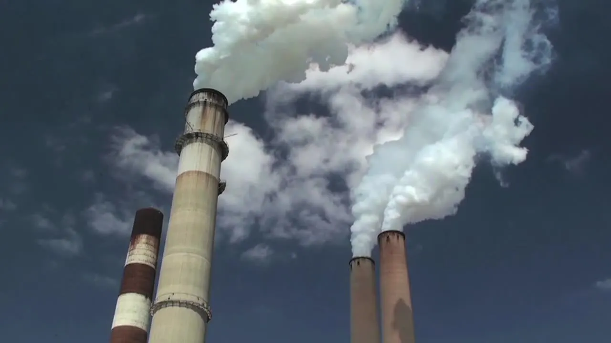
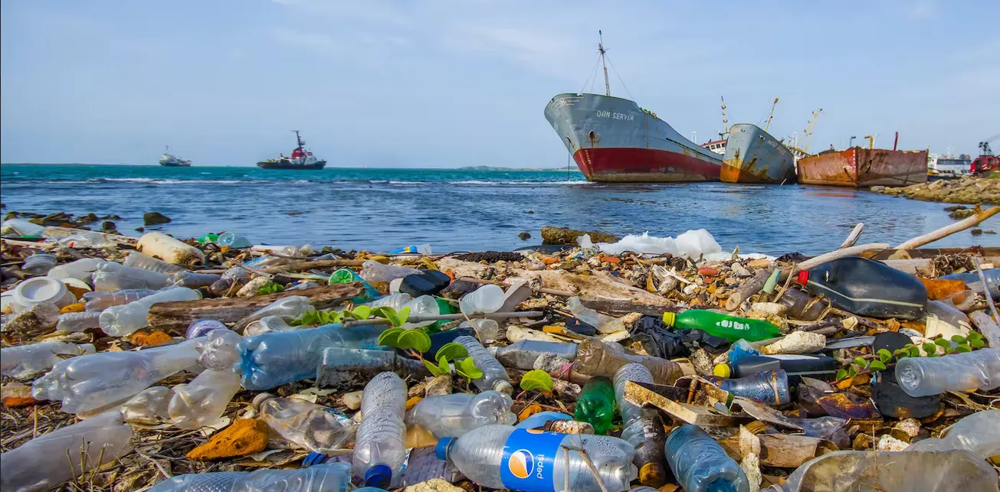

-
MORE ARTICLES
-  Industrial Waste
-
 Medical Waste
Medical Waste
-
 Biotechnology
Biotechnology
-  Oceans
E-waste includes used electronics that are intended for recycling through material recovery, refurbishment, reuse, resale, or disposal. E-waste processing done informally in underdeveloped nations can have a negative impact on human health and pollute the environment. The health of employees and the communities they live in may be significantly at risk during the recycling and disposal of e-waste. It is one of the fastest-growing waste sources since the information and technology revolution has rapidly boosted the usage of new electronic equipment while simultaneously producing enormous volumes of old devices.
It differs from conventional municipal garbage in that it often contains recoverable valuable elements in addition to complicated combinations of extremely toxic compounds that are hazardous to human health and the environment. The bulk of e-waste generated worldwide is recycled in underdeveloped nations, where illegal and dangerous methods of metal extraction and trade are prevalent. Developed nations must comply with stringent environmental regulations and rising garbage disposal costs. Electronic goods are also transported illegally across international borders from wealthy industrialized nations to impoverished nations. The International Telecommunication Union (ITU) also indicates that e-waste is one of the largest and most complex waste streams in the world. According to the Global E-waste Monitor 2020, the world generated 53.6 Mt of e-waste in 2019, only 9.3 Mt (17%) of which was recorded as being collected and recycled. E-waste contains valuable materials, as well as hazardous toxins, which make the efficient material recovery and safe recycling of e-waste extremely important for economic value as well as environmental and human health.
Recycling rates globally are low. Even in the EU, which leads the world in e-waste recycling, just 35% of e-waste is officially reported as properly collected and recycled.
Globally, the average is 20%; the remaining 80% is undocumented, with much ending up buried under the ground for centuries as landfill. E-waste is not biodegradable. The lack of recycling weighs heavily on the global electronic industry and as devices become more numerous, smaller and more complex, the issue escalates. Currently, recycling some types of e-waste and recovering materials and metals is an expensive process. The remaining mass of e-waste mainly plastics laced with metals and chemicals poses a more intractable problem.
A major challenge affecting the modern world is products being designed with 'planned obsolescence' wherein it has become cheaper to replace a product than to attempt to repair one that meets its artificially limited lifespan. Another issue related to this that has propped up in recent times is the right to repair. Companies like Apple and John Deere are prime examples of this; they go to great lengths to ensure that only they are able to repair or oftentimes completely replace the product instead of letting the customer or a third-party repair shop bring the device back to a proper working condition.